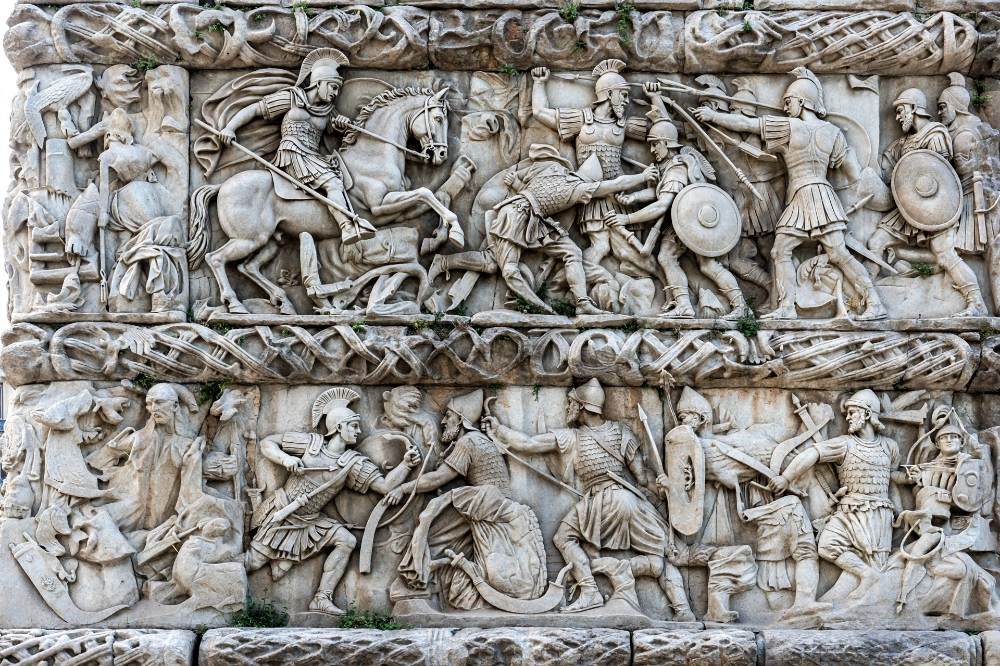

| Galerius | |
|---|---|
| Born | Gaius Galerius Valerius Maximianus, c. 258, near Serdica (Felix Romuliana), Dacia |
| Died | 5 May 311, Serdica |
| Reign | Caesar 293–305; Augustus 305–311 |
| Known for | Victory over Persia (298); Great Persecution of Christians; Edict of Serdica (311) |

Gaius Galerius Valerius Maximianus (c. 258 – 5 May 311) was a Roman emperor who rose from peasant stock in the Balkans to become Caesar in Diocletian's Tetrarchy in 293 and Augustus (senior emperor in the East) from 305 until his death. A formidable soldier, he is remembered both as the driving force behind the Great Persecution of Christians and, paradoxically, as the emperor who first granted Christianity legal toleration in the Edict of Serdica of 311.
Galerius was born near Serdica to a Thracian father and a mother who had fled across the Danube; hostile Christian sources sneered at his origins as a herdsman. He distinguished himself as an officer under Aurelian and Probus, and under Diocletian. In the Tetrarchy he married Diocletian's daughter Valeria and took charge of the Danube and the East. After an initial defeat by the Sasanian king Narseh near Carrhae in 297 — for which Diocletian humiliated him by making him run in his purple robes before the imperial carriage — Galerius returned in 298 with a reinforced army and won a crushing victory in Armenia, capturing Narseh's family, treasury, and harem. The resulting Peace of Nisibis (299) was Rome's most favorable eastern settlement in centuries, extending Roman influence to the Tigris and beyond. Galerius commemorated the triumph with his palace, triumphal arch, and rotunda at Thessaloniki, and built the great fortified palace complex of Felix Romuliana (Gamzigrad) in his homeland, named for his mother Romula.
Christian writers such as Lactantius blamed Galerius for instigating Diocletian's Great Persecution, launched by edicts from 303 that razed churches, burned scriptures, and ultimately demanded universal sacrifice. As Augustus after 305, Galerius enforced the persecution in the East with particular severity, even as it lapsed in the West. He despised and fought the usurpations that wrecked the Tetrarchy after Diocletian's abdication, sidelining rivals and promoting his protégé Licinius.
In 311, dying of a gruesome disease — described by gleeful Christian authors as a divine judgment of ulcerated bowels and worms — Galerius issued from Serdica the Edict of Toleration (30 April 311), the first imperial act legalizing Christianity: Christians were permitted to exist and to rebuild their churches, in return for their prayers for the emperor and the state. He died within days, on 5 May 311. The edict's pragmatism set the stage for Constantine and Licinius's more generous settlement of 313, traditionally called the Edict of Milan.